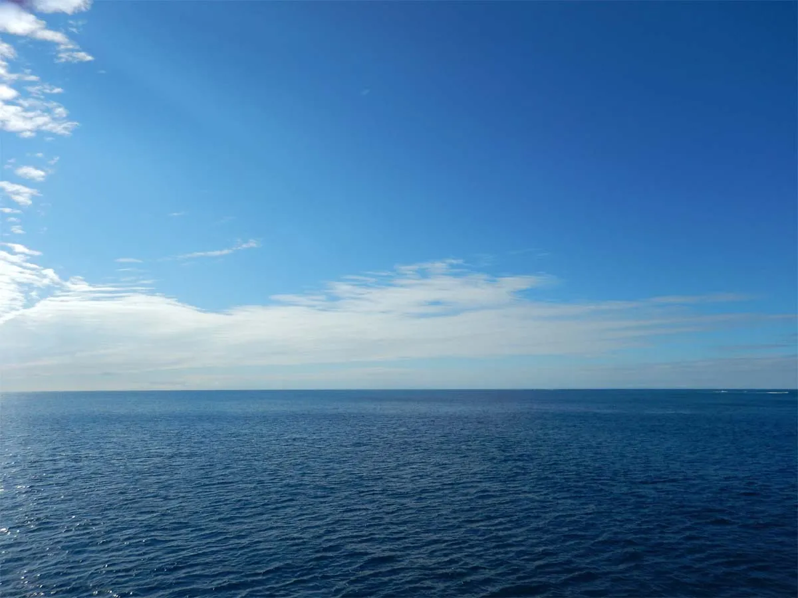
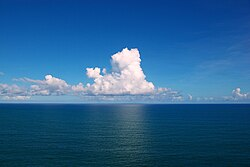
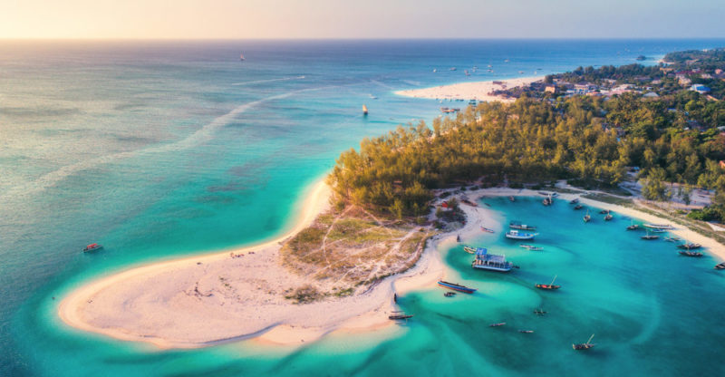
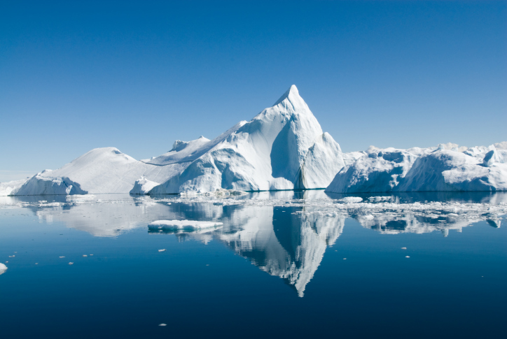
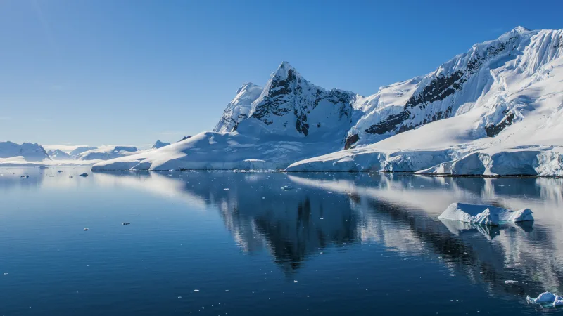
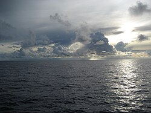
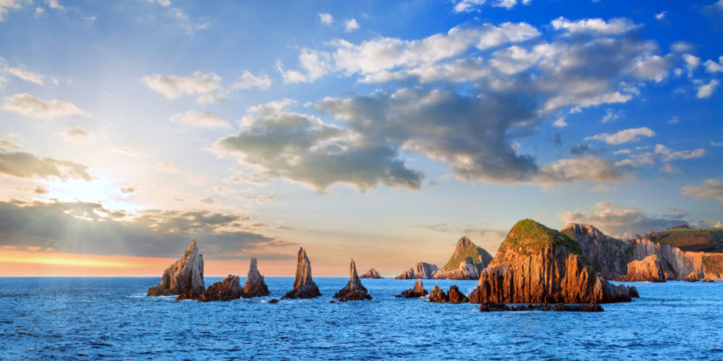

| Océano Pacífico |
- Entre Asia, América y Oceanía.
- El océano más grande y profundo del mundo.
|

|
| Océano Atlántico |
-
Segundo océano más grande, conocido por su biodiversidad.
- Entre América, Europa y África.
|

|
| Océano Índico |
-
Rico en recursos y biodiversidad, es el tercero más grande.
- Entre África, Asia y Australia.
|

|
| Océano Ártico |
-
El más pequeño y menos profundo, cubierto de hielo en gran
parte.
- Rodea el Polo Norte.
|

|
| Océano Antártico |
-
Rodea la Antártida y es crucial para la regulación del
clima.
- Alrededor del continente antártico.
|

|
| Océano del Sur |
-
Considerado parte del Océano Antártico, es vital para la
biodiversidad.
- Al sur del ecuador, alrededor de la Antártida.
|

|
| Océano del Norte |
-
Zona del Océano Atlántico, con influencias en el clima
global.
- Al norte del ecuador.
|

|